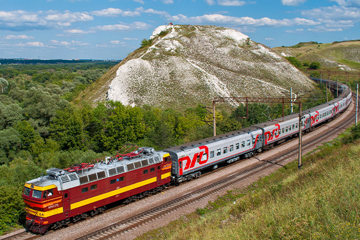

home > 사업분야 > 레일솔루션
레일솔루션
미래 철도 교통 시대를 여는 새로운 패러다임을 만듭니다
사업소개
철도사업은 국내를 넘어 세계 38개국에 전동차, 고속전철, 경전철, 디젤동차, 기관차 및 객/화차 등 다양한 차종의 철도차량을 공급해 왔으며, 철도차량의 핵심 전장품을 독자기술로 국산화하여 열차종합제어관리장치, 견인전동기, 추진제어장치, 보조전원장치 등을 생산하고 있습니다. 최근에는 철도차량 뿐만 아니라 신호, 통신, 전력, PSD 등 철도시스템분야를 비롯해 운영 및 차량 유지보수, 개조, 부품공급 등 철도서비스 분야로 사업영역을 더욱 확대해 나가고 있습니다.
| 구분 | 프로젝트명 | 날짜 |
|---|---|---|
| 전동차 | 인도 하이데라바드 전동차 | 2012 |
| 전동차 | 코레일 ITX-새마을 전동차 | 2011 |
| 자기부상열차 | 인천국제공항 도시형 자기부상열차 | 2011 |
| 고속전철 | 차세대 고속 전철 HEMU-430X | 2010 |
| 전동차 | 미국 덴버 전동차 | 2010 |
| 경전철 | 인천시 2호선 무인운전 경전철 | 2009 |
제품소개
-
- 고속전철
- 도시화를 통해 인구밀도가 높아짐에 따라 고속차량 서비스 수요 및 필요성이 날로 증가하고 있습니다. 350km/h급의 한국형 고속차량 설계 기술의 개발 및 시험을 성공한 바 있는 현대로템은 세계 네 번째의 상용고속열차인 KTX-산천을 제작한 데 이어, 2012년에는 430km/h급 차세대 동력분산식 고속열차(HEMU-430X)의 개발에 성공하였습니다. 국토교통부의 국가철도망 건설계획에 따른 고속차량 수요에 맞추어 현대로템은 250km/h급 동력분산식 고속차량 기술을 확보하여 250km/h-330km/h-430km/h에 이르는 고속철 풀 라인업을 구축하였습니다.
-
- 경전철
- 경전철은 지하철과 버스 중간규모의 수송수요에 적합한 새로운 도시교통수단으로서, 운행에 따른 전력비가 적게 들며 완전무인운전 시스템의 도입으로 운영비를 절감할 수 있는 경제적인 차량입니다. 또한, 연접장치(Articulation System) 채택으로 곡선 통과능력이 뛰어나 부지확보가 어려운 도심구간에 경제적인 노선 건설을 가능하게 하는 미래지향적인 교통시스템입니다.
-
- 자기부상열차
- 자기부상열차는 차량의 전자석과 궤도의 레일간 당기는 힘(흡인력)을 통해 차체를 부상시켜 운행하는 열차입니다. 궤도와 접촉 없이 주행하기 때문에 소음과 진동이 적고, 가/감속 성능, 등판, 곡선 통과 능력 등 주행 성능 또한 우수합니다. 또한 구조물이 슬림하여 초기 건설비가 저렴하고, 회전체가 없어 유지보수 부품 및 인력 최소화가 가능한 경제적인 시스템입니다.
-
- 트램
- 트램은 이산화탄소 배출 및 교통 체증을 감소시킬 수 있는 신 교통대안으로 부상하고 있습니다. 현대로템은 기존 동력원인 외부전원에 의존하지 않고 차량에 장착된 배터리를 동력원으로 하여 유가선 및 무가선 방식으로 주행 가능한 트램 시스템을 개발하였습니다. 도심에서 가선 없이 주행이 가능하므로 도시 미관을 해치지 않고 친환경적이며 효율적입니다. 또한 현대로템은 100% 저상 대차 기술 개발을 통해 기존 지하철이나 고가 경전철과 달리 보행자의 승강장 접근성을 높였으며. 휠체어, 유모차 등 교통약자도 승하차가 용이하도록 배려하였습니다.
-
- 디젤동차
- 현대로템은 세계 각국에 중장거리 여행에 적합한 디젤동차를 개발 및 공급하고 있습니다. 다년간 축적한 기술력으로 고객에게 안락한 승차감과 안전한 운행을 보증하는 현대로템은 고객의 요구에 따라 출력 분배 및 출력장치의 위치 변경 등 고객맞춤형 디젤동차를 설계·제작하고 있습니다.
-
- 기관차
- 현대로템은 세계 각국에 중장거리 여행에 적합한 디젤동차를 개발 및 공급하고 있습니다. 다년간 축적한 기술력으로 고객에게 안락한 승차감과 안전한 운행을 보증하는 현대로템은 고객의 요구에 따라 출력 분배 및 출력장치의 위치 변경 등 고객맞춤형 디젤동차를 설계·제작하고 있습니다.
-
- 객차
- 객차는 안전성, 속도, 승차감 그리고 저렴한 운행 및 유지보수 비용이 무엇보다도 중요합니다. 수년간 고품질 객차 개발에 노력을 경주해 온 현대로템은 미국 남가주 지방 철도공사(SCRRA)에 납품한 이층객차에 충돌 시 에너지 흡수를 최대화할 수 있는 CEM(Crush Energy Management) 기술을 적용하여, 실제 사고상황에서 인명 피해를 최소화함으로써 현지 시행청 및 언론으로부터 기술력 및 안전성에 대한 높은 평가를 받은 바 있습니다. 현대로템은 최고급 관광열차를 비롯한 다양한 클래스의 객차를 국내 뿐만 아니라 세계 여러나라로 공급하고 있습니다.
-

- 철도 차량
- 현대로템은 철도차량의 설계, 제작 및 서비스 분야에서 세계적인 경쟁력을 확보하고 있습니다. 전동차, 고속열차, 객차 등 다양한 차종의 철도차량을 국내외에 공급함은 물론, 전장품 사업 및 경정비, 중정비 등 차량 유지보수 영역에까지 그 활동 범위를 넓혀 가고 있습니다.
-
- 철도 시스템
- 현대로템은 철도차량뿐 아니라 신호, 통신, 전력, PSD 등 철도 E&M 분야 전반에 걸쳐 독보적인 역량을 구축하며 세계적인 철도시스템 종합 기업으로서의 입지를 다져 나가고 있습니다. E&M 설비를 비롯해 종합적인 사업관리 솔루션을 제공하며 서비스 향상에 최선을 다하고 있습니다.
-
- 유지 보수
- 현대로템은 철도 서비스 분야에서 세계적인 경쟁력을 확보하고 있습니다. 전동차, 고속열차 등 다양한 차종의 철도차량 유지보수 서비스를 국내외에 공급함은 물론 철도차량 개조 및 유지보수 부품의 안정적인 공급을 통해 차량 전수명주기 동안 고객 만족을 실현하고 있습니다.